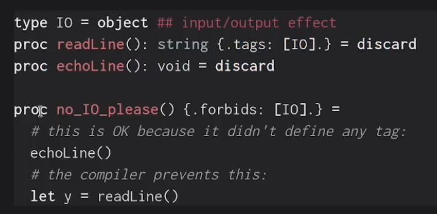

Nim
Impressions
-
Syntax can be confusing and somewhat cumbersome.
-
I might rank the language higher, but the syntax is off-putting, and it doesn’t target a specific niche.
-
Compiling to C/C++ and JS is interesting, but that’s the main reason someone might use it.
-
Could be useful if you work with C/C++.
-
-
Installing Nim on Windows triggered antivirus alerts.
-
Opinions:
-
"The language doesn’t seem to solve anything. It doesn’t have a niche."
-
"It’s one of my favorite programming languages for rapid prototyping red teaming tools."
-
"Fun fact: Nim has grown in popularity in the ethical hacking/red teaming community due to its simplicity, cross-compilation, and easy access to the Windows API with the winim library."
-
About
-
Supports OOP.
-
First appeared in 2008.
-
Seems not to support mobile compilation.
-
Garbage-collected (GC can be disabled for manual memory management)
-
Nim provides different GC strategies for performance tuning:
-
refc: Reference counting (default) -
orc: Optimized reference counting (since Nim 1.4) -
markAndSweep: Traditional mark-and-sweep -
boehm: Integration with external Boehm GC -
none: No GC (useful for real-time or embedded systems)
-
-
Despite having GC, Nim allows manual memory management, letting developers optimize memory use.
-
Modules like
std/memutilsaid explicit allocation and deallocation.
-
-
Can compile to C , C++ , or JavaScript .
nim c --genScript hello.nim # Generates C code nim cpp --genScript hello.nim # Generates C++ code -
Supports macros and other metaprogramming features.
Popularity
-
0.4%
-
Extremely niche
Security
-
Default: Private
-
Everything in a Nim module is private by default. Use
*to make it public.
-
Syntax
-
Overall, syntax is strange for anything moderately complex:
echo "hello mom"
var message1 = "nim has inference"
var message2: string = "nim is cool"
if a:
if b:
c = false
else:
c = true
for i in countup(6, 9):
echo i
for i in countdown(9, 6):
echo i
-
OOP example:
type
Animal = ref object of RootObj # Base class (abstract)
name: string
Cat = ref object of Animal # Subclass Cat
breed: string
Dog = ref object of Animal # Subclass Dog
breed: string
# Dynamic method for "speak"
method speak(a: Animal) {.base.} =
echo a.name & " makes an unknown sound."
method speak(c: Cat) =
echo c.name & " meows!"
method speak(d: Dog) =
echo d.name & " barks!"
# Creating instances
let myCat = Cat(name: "Felix", breed: "Siamese")
let myDog = Dog(name: "Rex", breed: "Labrador")
# Calling polymorphic methods
speak(myCat) # Output: "Felix meows!"
speak(myDog) # Output: "Rex barks!"
-
*marks public members (unusual). -
vardeclares variables. -
Difference between
constandlet:-
constis evaluated at compile-time;letis evaluated at runtime.
-
-
.forbidsconcept is useful for team collaboration.- 